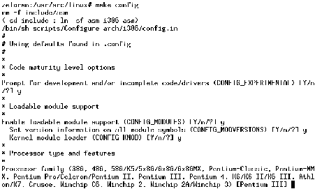
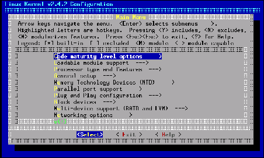
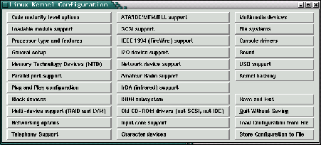

Next: LILO
Up: Personalización y compilación del
Previous: Actualización del núcleo
Índice General
Habiendo enumerado los pasos para la actualización del núcleo en el
sistema, vamos a abocarnos a una de las etapas quizás mas complicadas
del proceso.
Un detalle muy importante a tener en cuenta a la hora de compilar un
núcleo, es que se deben tener instalados en el sistema los paquetes de
desarrollo. El núcleo Linux está programado en casi su totalidad en C,
por lo tanto se debe tener instalados la biblioteca C de desarrollo y
el compilador de dicho lenguaje.
Dependiendo de la distribución que se utiliza, el método de
instalación de los paquetes difiere un poco. Dejando de lado el
formato de paquetes y la distribución, se debe revisar si los paquetes
gcc y libc6-dev se
encuentran instalados, estos paquetes siempre tienen un nombre similar
en cualquier distribución.
Existen 3 formas de configurar las opciones y características a
incluir en el núcleo, una es usando un programa de línea de comandos,
que línea a línea va preguntando las diferentes opciones, este método
era el que se utilizaba hace algunos años, los demás métodos son mas
agradables. El segundo método es mediante el uso de una interfaz de
texto, pero a pantalla completa, con uso de la biblioteca
ncurses, si se quiere utilizar este método, se deben tener
instalados en el sistema dicha biblioteca (normalmente se instala por
defecto), cuyo paquete generalmente se denomina libncurses.
El tercer y último método es mediante el uso de una interfaz gráfica
en las X; este método utiliza las bibliotecas Tcl/Tk, que
también normalmente se instalan por defecto en el sistema.
El primer método es el que se utilizaba con las primeras versiones del
núcleo, como se puede observar en la figura
11.1, no es muy amigable pero a veces
puede resultar útil cuando no se tiene disponible una interfaz gráfica
ni las bibliotecas ncurses. Estando en el directorio del código
fuente del núcleo, se ejecuta el siguiente comando:
root@maquina:/usr/src/linux# make config
Figura 11.1:
Configurando el núcleo con la interfaz de línea de comandos
|

|
Siempre hay que tener en cuenta el usuario que se está utilizando en
esta tarea, si bien el compilar un núcleo no requiere de utilizar el
usuario administrador, dependiendo del directorio donde esté alojado
el árbol de fuentes será o no necesario usar la cuenta root.
Como generalmente el directorio donde se aloja el código fuente del
núcleo es /usr/src, se necesitará usar la cuenta de
administrador, a menos que dicho directorio posea permisos especiales
para algún otro usuario del sistema.
El segundo método mencionado corresponde al uso de la interfaz de
texto a pantalla completa, como se ve en la figura
11.2. Este método se usará en el
resto del curso.
Esto se obtiene ejecutando el siguiente comando:
root@maquina:/usr/src/linux# make menuconfig
Figura 11.2:
Interfaz de texto a pantalla completa
|

|
El tercer método utiliza una interfaz gráfica en las X (figura
11.3). Es el método mas práctico,
siempre y cuando se disponga de las X, claro está. Por esa razón hemos
seleccionado el anterior método para las demás figuras, aunque se debe
saber que los tres métodos poseen los mismos contenidos, solo cambia
la manera de desplegar la información.
Este tercer método se obtiene ejecutando desde una terminal X lo siguiente:
root@maquina:/usr/src/linux# make xconfig
Figura 11.3:
Interfaz gráfica para configurar el núcleo
|

|
Una vez presentados los métodos de configuración del núcleo, nos toca
seleccionar las opciones y características que el nuevo núcleo
incluirá. Lo que siempre se recomienda al agregar opciones en el
núcleo, es que aquellas opciones que tengan la posibilidad de ir como
módulos, que lo hagan. Con esto, obtendremos un núcleo mas pequeño, y
los módulos que se han compilado se irán cargando y descargando
automáticamente, a medida que se necesiten activar ciertas
funcionalidades, y luego ya no se necesiten. Al tener menos cantidad
de código en memoria, no sólo se produce un ahorro de RAM (que es
prácticamente insignificante en estos días ahorrar unos 100k de RAM),
sino que lo mas importante es el tener menos posibilidades que algo
falle. El sentido común dice que un núcleo de 400Kb en memoria mas
200Kb de módulos no cargados tendrá menos posibilidades de falla que el
mismo núcleo, pero con sus 600Kb completos en memoria.
Cómo saber cual función debería ir en módulo y cual en el núcleo? Lo
que se recomienda es tener en cuenta la necesidad del uso de cada
funcionalidad del núcleo para realizar esta decisión. Por ejemplo, una
máquina que posee discos rígidos IDE, los va a necesitar usar en todo
el tiempo que esté encendido el equipo (salvo raras ocasiones),
entonces el soporte para discos IDE debería ir en el núcleo y no como
un módulo, ya que de ir como módulo, estaría siempre cargado. Un
servidor de red necesitará el manejador de la tarjeta de red siempre
activo, entonces conviene compilarlo en el núcleo, pero el uso del
módem de dicho equipo es muy esporádico, en este caso el manejador del
módem o los puertos serie podría ir como módulos. También hay que
tener en cuenta algo importante: el núcleo necesita saber como manejar
un disco rígido para poder iniciar todo el sistema (si el sistema está
almacenado en un disco rígido, como normalmente ocurre), si se compila
el soporte de discos rígidos (cualquiera sea el tipo) como módulo, el
núcleo necesitará poder manejar el disco rígido al iniciar el equipo
para poder cargar el módulo para poder manejar el disco
rígido11.7, y obviamente este tipo de casos causan
problemas.
Resumiendo, hay dos casos en los cuales una funcionalidad del núcleo
no debería ser compilada como núcleo:
- La funcionalidad en cuestión es esencial para el correcto
arranque del sistema.
- Dicha funcionalidad va a utilizarse en todo momento del
funcionamiento del sistema.
Para los demás casos es conveniente compilar como módulo. El sistema
se encargará de cargar el módulo cuando se necesite, y cuando ya no se
use, se descargará para liberar memoria.
Cuando se ejecuta el comando make menuconfig se presenta una
serie de secciones donde se agrupan las diferentes capacidades del
núcleo, esta lista que sigue proporciona una breve explicación de los
contenidos de cada una de estas secciones11.8:
- Code maturity level options
- Se presenta una única opción, al
activarla, será posible activar aquellas funcionalidades
experimentales que tenga el núcleo, generalmente esto no es
recomendable cuando se está compilando un núcleo para algún servidor
de producción, a menos que se tenga la certeza de que tal o cual
opción es estable y funciona bien (o sea imprescindible).
- Loadable module support
- Las opciones que se incluyen en esta
sección tienen que ver con el manejo de los módulos del núcleo. En
algunos casos no será necesario o no se podrá tener módulos,
entonces se pueden desactivar. En este método de configuración del
núcleo, aquellas opciones del mismo que sea posible compilar como
módulo tendrán la casilla de selección a la izquierda de esta forma:
< >, cuando se llega a alguna opción con este tipo de casilla
de selección, oprimiendo se la selecciona para compilarse
dentro del núcleo, si se presiona
 se la seleccionará para
compilarse como un módulo.
se la seleccionará para
compilarse como un módulo.
- Processor type and features
- Dentro de esta sección
encontraremos opciones de optimización del núcleo para el tipo de
procesador que se posea. Con cada nueva serie de procesadores,
características nuevas van siendo disponibles para ciertas
funciones, lo que aprovecharlas es interesante para aumentar el
desempeño general del sistema. El núcleo Linux soporta también
equipos con mas de un procesador, en caso de estar compilando el
núcleo para un equipo de este tipo, en esta sección se debe activar
la opción Symmetric multi-processing support para sacar el
máximo provecho.
- General setup
- Como su nombre lo indica, esta sección contiene
opciones de configuración general del núcleo, entre ellas se
encuentran opciones especificando la marca y el modelo del
chipset de la placa madre del equipo, así como también si el
núcleo utilizará el sistema de administración de energía que provee
el BIOS, el formato en el cual el núcleo será compilado, si se
soportarán dispositivos PCMCIA, etc.
- Memory Technology Devices (MTD)
- Esta sección en nueva de los
núcleos de la serie 2.4.x, posee una opción para dar soporte a los
dispositivos de discos en memoria, para poder manejar sistemas de
archivos de estado sólido en dispositivos embebidos. Normalmente
esta opción no se utilizará.
- Parallel port support
- Dentro de esta sección se encuentra la
opción que activa el soporte para el puerto paralelo. Generalmente
utilizaremos el puerto paralelo si en la máquina se tendrá alguna
impresora de puerto paralelo instalada, alguna unidad de disco Zip,
o cualquier otra unidad de disco por puerto paralelo (grabadoras de
CD-R, por ejemplo) o en el caso de utilizar un cable paralelo para
conectarse con otra máquina. Se debe tener en cuenta que esta opción
se refiere solamente al soporte de base para todos aquellos
dispositivos que utilicen el puerto paralelo, en otras secciones se
debe después confirmar el soporte individual para aquellos
dispositivos específicos.
- Plug and Play configuration
- Hace unos años se ha impuesto como
estándar una norma para periféricos de tal modo que no tengan que
ser configurados sus parámetros (IRQs, direcciones de E/S, etc.)
manualmente, sino que el sistema lo pueda manejar lo mas
convenientemente posible, de esta forma, el sistema operativo podría
lidiar con los conflictos y solucionar los problemas que puedan
surgir, liberando al usuario de estas tareas que a veces suelen ser
complicadas de solucionar. Este estándar se conoce como
Plug&Play (o abreviado, PnP), y aunque inicialmente los
dispositivos PnP no funcionaban muy bien, hoy en día es mas común
ver este tipo de periféricos que los otros. El núcleo Linux tiene
soporte para estos dispositivos mediante la opción dentro de esta
sección. Además, se cuenta con un paquete de software llamado
isapnptools que es muy útil para configurar los antiguos
dispositivos PnP ISA (normalmente, los módems).
- Block devices
- En esta sección se presentan opciones para dar
soporte a varios tipos dispositivos de bloques, incluyendo unidades
de discos flexibles, discos IDE por puerto paralelo, discos en
memoria RAM, y otros mas.
- Multi-device support (RAID and LVM)
- Esta sección contiene
opciones de configuración que muchas veces se utilizan en equipos
servidores. RAID es una norma que sirve para generar arreglos de
múltiples discos de manera de obtener redundancia de información y
evitar problemas de corrupción de datos en el caso de que algún
disco del arreglo tenga una falla. RAID tiene varios modos de
funcionamiento, generalmente en los servidores se utilizan placas
controladoras de discos RAID (soporte de hardware) que funcionan en
forma transparente y el sistema operativo no se da cuenta, sin
embargo el núcleo Linux da la posibilidad de poder utiliza discos
comunes como discos RAID (soporte por software) teniendo de esta
manera un elemento mas de seguridad a bajo costo. LVM es otro método
de combinación de discos, pero para la generación de volúmenes o
grupos de volúmenes de lógicos, cuyo tamaño puede variar en tiempo
de corrida del sistema, sin tener que reiniciar ni parar servicios.
LVM no se utiliza para dar redundancia de datos, sino para combinar
varios discos (de distintos tipos) y utilizarlos como si fuera un
gran disco grande.
- Networking options
- En esta sección se encuentran las opciones
de soporte base de redes. Se podrán activar los soportes de varios
protocolos, con sus opciones específicas, el mas común en estos días
es el protocolo TCP/IP, uno de los protocolos que se utiliza
en Internet. Otra opción bastante novedosa en los núcleos, es la
opción QoS (Quality of Service) la cual se utiliza para definir los
algoritmos de planificación de paquetes de red, pudiendo partir un
enlace en varios sub-canales por decirlo de alguna manera, y de esta
forma poder asignar cierto ancho de banda a diferentes clientes.
Tener en cuenta que esta sección no se trata acerca de soporte a
periféricos de red, sino a protocolos, para tener soporte de una
placa de red en especial, se debe activar en otra sección.
- Telephony Support
- En esta sección se da soporte a los
dispositivos VoIP (Voice over IP), que se utilizan para hablar por
teléfono a través de redes de datos, en vez de redes de telefonía.
Estos dispositivos cada vez se están viendo con mas frecuencia, quien
sabe, en unos años quizás podremos hablar al otro lado del mundo sin
tener que pagar altísimos costos.
- ATA/IDE/MFM/RLL support
- Aquí se da soporte a los discos IDE,
sean discos rígidos, flexibles, CD-ROMs, etc. También hay varias
opciones para especificar la marca de controladora de disco que se
posee, y otros detalles para mejorar la performance. El núcleo Linux
puede manejar sin problemas los nuevos discos con UDMA.
- SCSI support
- También existe soporte para los dispositivos SCSI,
en esta sección están las opciones para definir los tipos de
dispositivos SCSI que se dará soporte, mas otras opciones de
control. Un ejemplo común para esta sección es el soporte para las
unidades de discos Zip por puerto paralelo, En realidad estas
unidades trabajan con la norma SCSI, y es por eso que parte de las
opciones que se necesitan para poder hacer funcionar estos
periféricos, se encuentran en esta sección.
- IEEE 1394 (FireWire) support
- FireWire es una nueva clase de bus
de datos, de alta velocidad que normalmente se utiliza para
transmitir vídeo. Originariamente en las Macintosh, esta clase de
conexiones se las utiliza para conectar una cámara de vídeo al
equipo y capturar vídeo sin problemas de lentitud. Actualmente
existen placas con puertos FireWire para PCs compatibles con IBM.
- I2O device support
- La arquitectura I2O se ha pensado
para dividir los manejadores de dispositivos I2O en dos partes: una
dependiente del sistema operativo y otra no, de manera de que el
fabricante del dispositivo en cuestión solamente deba hacer un solo
manejador (la parte no dependiente del sistema operativo) y de esta
forma poder utilizarlo en cualquier sistema operativo compatible con
I2O. El autor11.9 no conoce actualmente ningún dispositivo de esta clase,
seguramente con el tiempo irán siendo mas comunes.
- Network device support
- Esta sección engloba a todas las
opciones de soporte de interfaces de red, desde ethernet de 10, 100
y 1000 Mbps, pasando por SLIP, PPP, PLIP, hasta interfaces WAN,
Token Ring y otras. Normalmente se deberán activar las opciones de
soporte para placas ethernet e interfaces PPP (si es que se
utilizará módem).
- Amateur Radio support
- Los aficionados a las comunicaciones
radiales no quedan de lado en lo que respecta a soporte en el
núcleo. Linux tiene soporte para varios TNCs, o para simular un TNC
usando una placa de sonido, de tal forma de poder conectarse con
otros equipos mediante el protocolo AX.25.
- IrDA (infrared) support
- Esta sección generalmente es para las
notebooks, que poseen un puerto infrarrojo. IrDA es un protocolo de
transferencia de datos vía infrarrojo que se encuentra normalmente
en PDAs (como las Palm) permitiendo así sincronizar los datos de la
PDA en una notebook sin necesidad de conectarla con un cable serie o
USB.
- ISDN subsystem
- ISDN (o RDSI, como se lo llama en España) es un
tipo especial de servicios digitales de telefonía. Normalmente se lo
utiliza para conectarse a Internet, teniendo una velocidad mucho
mayor que conectando se con módem. Actualmente se está dejando de
lado ISDN en favor de ADSL, en Argentina por ejemplo, ISDN no se ha
visto, por su alto costo.
- Old CD-ROM drivers (not SCSI, not IDE)
- En esta sección se da
soporte a aquellas unidades de CD-ROMs antiguas que no eran
compatibles con las normas IDE ni SCSI. Generalmente eran unidades
que había que conectar a placas de sonido, actualmente no se ven
esta clase de unidades de CD-ROM.
- Input core support
- Las opciones que esta sección provee,
permiten la configuración de dispositivos de entrada del tipo USB,
tales como teclados, mouses, etc.
- Multimedia devices
- Esta sección contiene las opciones
necesarias para dar soporte a dispositivos de captura de vídeo y
tarjetas de radio.
- File systems
- Los sistemas de archivos son los formatos que se
le dan a las particiones para poder almacenar archivos, administrar
los atributos de cada archivo, etc. Esta sección posee las opciones
de soporte de sistemas de archivos tanto nativos de GNU/Linux como
de otros sistemas operativos, como por ejemplo FAT32. Es importante
tener en cuenta que el soporte para el sistema de archivo que se
esté utilizando en el sistema debe estar compilado dentro del núcleo
y no como módulo, normalmente este sistema es el Second
extended filesystem (e2fs). En los últimos núcleos se puede
configurar el soporte para un nuevo sistema de archivos nativo de
GNU/Linux: el Reiser filesystem (reiserfs), el cual es un
sistema de archivos jornalizado, que provee ciertas características
que lo hacen mas seguro que el e2fs. Además se provee opciones para
dar soporte a varios sistemas de archivos de red, que permiten
utilizar discos remotos como si fueran locales al equipo, como por
ejemplo NFS (generalmente se utiliza en los UN*X), SMB (plataformas
Windows) y NCP (volúmenes NetWare).
- Console drivers
- Aquí se encuentran las opciones para configurar
el tipo de consola que se usará en el sistema. Dependiendo de la
tarjeta de vídeo que se posea, se puede configurar para que la
consola tenga el típico formato de 80x25 caracteres, o mas
resolución. También se puede configurar el núcleo para soportar mas
de una placa de vídeo, pudiendo tener dos monitores, uno como
consola de texto y otro como consola gráfica.
- Sound
- Esta sección contiene las opciones de sonido, pudiendo
configurar una gama de tarjetas de sonido bastante amplia.
- USB support
- Esta sección provee soporte para distintos
dispositivos USB, desde escáneres, dispositivos de almacenamiento de
datos, reproductores de MP3, módems, impresoras hasta adaptadores de
red.
- Kernel hacking
- Esta sección contiene una opción que se utiliza
cuando se prueban núcleos en desarrollo, generalmente no se
necesitará (ni tampoco será muy seguro) activar esta opción, a menos
que se esté colaborando con el desarrollo del núcleo.
Una vez seleccionadas todas las opciones, se debe salir del sistema de
configuración del núcleo y salvar los cambios. Las opciones
seleccionadas del núcleo se guardarán en el un archivo llamado
.config dentro del árbol de fuentes del núcleo. Esto es
interesante saberlo para poder copiarlo en algún sitio como respaldo y
no perder las configuraciones del núcleo si necesitamos alguna vez
borrar todos los archivos (por cuestión de espacio, por ejemplo).
Una vez que se ha salido del sistema de configuración del núcleo,
antes de compilar se deben generar las dependencias con el siguiente
comando:
root@maquina:/usr/src/linux# make dep
Luego se compila el núcleo:
root@maquina:/usr/src/linux# make bzImage
Esto puede tardar algunos minutos, dependiendo de la potencia del
procesador y la cantidad de memoria RAM del equipo.
La opción bzImage (tener en cuenta las mayúsculas) le dice al
compilador que genere el archivo del núcleo y lo comprima con
bzip2. Antes se utilizaba la opción zImage que
generaba un núcleo comprimido con gzip, pero tenía un límite
de tamaño que actualmente se ha sobrepasado por la cantidad de
opciones que posee el núcleo. bzip2 comprime mejor que
gzip.
Luego de generar el núcleo, se deben generar los módulos, con el comando:
root@maquina:/usr/src/linux# make modules
Esta etapa quizás tome mas tiempo que la anterior, dependiendo de la
cantidad de opciones que se hayan elegido como módulos.
Una vez finalizado, se deben instalar los módulos de la siguiente
manera:
root@maquina:/usr/src/linux# make modules_install
Y por último, se debe copiar el archivo del núcleo a algún sitio donde
estén alojados normalmente los núcleos, como por ejemplo el directorio
/boot. El archivo del núcleo, suponiendo que el conjunto de
archivos fuente del núcleo se haya almacenado en el directorio
/usr/src/linux, se encuentra en
/usr/src/linux/arch/i386/boot/bzImage.
Como último paso, se debe configurar el LILO para poder
probar el nuevo núcleo, pero esto se verá en la sección
11.2.5.
A modo de información, es conveniente comentar el uso de una utilidad
bastante práctica. El comando dmesg imprime en pantalla los
diferentes mensajes de inicio que el núcleo muestra cuando se arranca
el sistema. Esto puede ser muy útil cuando se necesita chequear
mensajes de error que no se han podido leer bien en el arranque.
Next: LILO
Up: Personalización y compilación del
Previous: Actualización del núcleo
Índice General
Proyecto Cursos - LuCAS - http://lucas.hispalinux.es/htmls/cursos.html